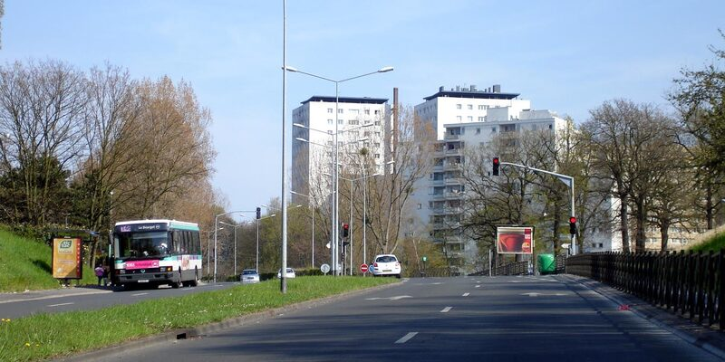

Note méthodologique. Toutes les données proviennent de sources publiques françaises : INSEE Filosofi 2021 (Fichier Localisé Social et Fiscal — revenus/pauvreté, le millésime 2022 n'ayant jamais été publié), RP 2022-2023 (recensement de la population), France Travail T2-T4 2024 (chômage par zone d'emploi), DVF 2022-2025 (transactions immobilières notariées), SIRENE 2024 (répertoire des entreprises), BODACC 2025-2026 (procédures collectives). Les millésimes exacts sont indiqués pour chaque chiffre. Chaque source est cliquable en bas de page. On n'interprète que ce que les données montrent. Article mis à jour le 14 mars 2026.
Pourquoi ces deux villes
On cherchait deux communes qui partagent les mêmes galères (pauvreté élevée, chômage au-dessus de la moyenne nationale, population modeste) mais qui ont fait des choix politiques radicalement différents. L'idée n'est pas de dire qui a raison. C'est de regarder si le choix politique se voit dans les données.
Clichy-sous-Bois (Seine-Saint-Denis, 93) est devenue un symbole national en 2005. Depuis, la ville vote massivement à gauche et macronisme. Olivier Klein, maire PS puis Horizons, a été ministre délégué à la Ville en 2022-2024. La commune a bénéficié du plus grand projet ANRU de France, soit 1,5 milliard d'euros de renouvellement urbain. Le tramway T4 est arrivé. Le GPE (Grand Paris Express) arrive.[1]
Hénin-Beaumont (Pas-de-Calais, 62) a élu Steeve Briois (RN) en 2014 dès le premier tour, avec 50,26 %. Réélu en 2020 avec 57 %. Ancien bassin minier, la ville a perdu son industrie et n'a jamais vraiment trouvé de relais économique. Le RN y applique sa politique depuis plus de 10 ans maintenant : baisse revendiquée de la fiscalité locale, mise en avant de la sécurité, communication offensive.[2]

Avertissement méthodologique. Cette comparaison est politique et symbolique, pas statistique. Clichy-sous-Bois (banlieue parisienne, population jeune, parc HLM, économie résidentielle) et Hénin-Beaumont (bassin minier, population vieillissante, parc de maisons, économie post-industrielle) sont structurellement différentes. Une comparaison rigoureuse exigerait un contrefactuel proche (Hénin-Beaumont vs Liévin par exemple). Ici, on compare deux réponses politiques à des difficultés comparables, pas deux villes interchangeables.
Deux villes de taille comparable (~25 000–30 000 habitants). Deux taux de pauvreté bien au-dessus de la moyenne nationale. Deux taux de chômage qui dépassent le double de la moyenne française. Et un salaire net moyen nettement inférieur à la médiane nationale dans les deux cas. Mais deux trajectoires politiques totalement opposées.
Ce que disent les données
La pauvreté : elle ne vote pas
Le taux de pauvreté de Clichy-sous-Bois est de 42 %. Presque un habitant sur deux vit sous le seuil de pauvreté. C'est l'un des taux les plus élevés de France métropolitaine. À Hénin-Beaumont, c'est 24 %, certes mieux, mais toujours bien au-dessus de la moyenne nationale de 14,4 %.[4]
Le plus révélateur, c'est la tendance. À Hénin-Beaumont, le taux de pauvreté en 2014, l'année de l'élection de Briois, était de 25,1 %. En 2021, après 7 ans de gestion RN : 24 %. Soit une baisse de 1,1 point en 7 ans.[5]
Taux de pauvreté 2014 : 25,1 % (Filosofi 2014)[5]
Taux de pauvreté 2021 : 24,0 % (Filosofi 2021)[4]
Variation : 24,0 - 25,1 = -1,1 point
Sur la même période, la moyenne nationale passe de 14,1 % à 14,4 % (+0,3 pt).[6]
Pour mettre ça en perspective : sur la même période, le taux de pauvreté national est passé de 14,1 % à 14,4 %. La baisse d'Hénin-Beaumont est réelle, mais elle s'inscrit dans une tendance régionale. Le bassin minier dans son ensemble a connu des évolutions similaires, indépendamment de la couleur politique des mairies.[6]
Les indicateurs structurels de pauvreté bougent à l'échelle de la décennie. Aucun programme municipal, de gauche, de droite ou d'extrême droite, ne change une courbe de pauvreté en un mandat.
Le revenu : même combat, mêmes montants
Le revenu médian annuel par unité de consommation est de 15 260 € à Clichy-sous-Bois et 19 170 € à Hénin-Beaumont. Pour comparaison, la médiane nationale est à 22 040 €.[4]
Les deux villes sont significativement en dessous. La différence entre elles (environ 4 000 €) s'explique par la structure démographique : Clichy a des ménages plus grands, plus jeunes, avec des taux d'emploi partiel plus élevés. Hénin-Beaumont a une population plus âgée, avec davantage de retraités, ce qui remonte mécaniquement la médiane grâce aux pensions.
Dans les deux cas, ces revenus médians n'ont pas significativement évolué en euros constants sur la période 2017-2021. Les programmes municipaux, quels qu'ils soient, n'ont pas d'impact mesurable sur le revenu des habitants.
Le chômage : des trajectoires parallèles
Clichy-sous-Bois affiche un taux de chômage de 19,4 % contre 17,8 % pour Hénin-Beaumont (données recensement 2022). Les deux sont plus du double de la moyenne nationale.[3]
Taux de chômage Clichy-sous-Bois : 19,4 % (RP 2022)[3]
Taux de chômage Hénin-Beaumont : 17,8 % (RP 2022)[3]
Moyenne nationale : 7,4 % (RP 2022)
Rapport : Clichy = 2,6× la moyenne, Hénin = 2,4× la moyenne.
Là encore, la tendance est instructive. Le chômage a baissé dans les deux villes entre 2015 et 2021, suivant exactement la même courbe que le reste du pays. La reprise post-Covid a été aussi lente ici qu'ailleurs dans les territoires en difficulté. Ni le programme « sécurité et baisse d'impôts » d'Hénin-Beaumont, ni le programme « renouvellement urbain et investissement public » de Clichy n'ont créé de décrochage visible par rapport à la tendance nationale. La compétence développement économique a été transférée aux intercommunalités par la loi NOTRe (2015) — le chômage d'une commune se pilote depuis l'agglomération, pas depuis la mairie.
L'immobilier : le vrai thermomètre
Les prix immobiliers sont souvent un meilleur indicateur d'attractivité qu'un sondage d'opinion. Les gens votent aussi avec leurs pieds. Et leur portefeuille.
À Clichy-sous-Bois, le prix moyen au m² est de 2 181 €/m² (tous biens confondus, source MeilleursAgents début 2025), en baisse de -6,1 % sur un an (après -9,4 % entre 2023 et 2024). Le marché est essentiellement composé d'appartements (72 % des 145 transactions en 2024). C'est bas pour la Seine-Saint-Denis, mais le Grand Paris Express (ligne 16, gare de Clichy-Montfermeil prévue fin 2027) et le programme ANRU (390 M€ mobilisés) soutiennent les prix à moyen terme.[7]
À Hénin-Beaumont, le prix moyen des maisons est de 1 412 €/m², en baisse de -8,4 % entre 2023 et 2024. Les appartements sont à 1 464 €/m². Sur 262 transactions en 2024, 82 % concernaient des maisons. Sur 5 ans, le marché affiche +10 % en valeur nominale, mais cette hausse est portée par l'inflation immobilière générale et masque une stagnation en euros constants.[7]
Clichy-sous-Bois : 2 563 → 2 322 €/m² soit -9,4 %[7]
Hénin-Beaumont : 1 552 → 1 421 €/m² soit -8,4 %[7]
Les deux marchés reculent en 2024, dans un contexte national de correction immobilière post-hausse des taux.
Note : les prix ci-dessus sont calculés sur les transactions DVF (données notariales), qui peuvent différer des estimations MeilleursAgents citées plus haut.
Attention : les marchés ne sont pas directement comparables (appartements en banlieue parisienne vs maisons dans le bassin minier). Mais la dynamique est parlante. Les deux villes subissent la correction immobilière nationale, et ni l'investissement public massif (Clichy) ni la baisse de fiscalité revendiquée (Hénin-Beaumont) n'ont suffi à protéger les prix. Les prix immobiliers reflètent la géographie et la conjoncture nationale des taux d'intérêt, pas la gestion municipale.
L'effet ANRU : 1,5 milliard d'euros plus tard
Clichy-sous-Bois a bénéficié de l'un des plus grands programmes de renouvellement urbain de France. Le projet ANRU a mobilisé 390 millions d'euros directement, et 1,5 milliard d'euros au total avec l'ensemble des partenaires (État, collectivités, bailleurs, CDC). Le tramway T4 dessert désormais la ville. La ligne 16 du Grand Paris Express, avec sa gare Clichy-Montfermeil, est prévue pour fin 2027.[1][11]
Population Clichy-sous-Bois : ~30 000 hab
Investissement ANRU total : 1,5 Md€
Soit : ~50 000 € par habitant
Budget d'investissement annuel moyen d'une commune française : ~500 €/hab/an
L'ANRU à Clichy représente l'équivalent de 100 ans de budget d'investissement communal moyen.
Malgré cet investissement massif, le taux de pauvreté reste à 42 %. Le chômage est toujours à 19,4 %. Les prix immobiliers baissent. Ce n'est pas un échec de l'ANRU : le renouvellement urbain se mesure en décennies, pas en mandats. Les premières livraisons de logements neufs datent de 2019-2020, les équipements publics sont encore en cours. La transformation est réelle, mais elle n'a pas encore eu le temps de se traduire dans les indicateurs macro-économiques.
C'est un point essentiel pour la suite de l'analyse. Si 1,5 milliard d'euros d'investissement public, portés par l'État et ses partenaires, ne suffisent pas à faire bouger rapidement les indicateurs de pauvreté et de chômage d'une commune de 30 000 habitants, alors attendre d'un maire — de quelque bord que ce soit — qu'il change ces mêmes indicateurs avec un budget municipal est tout simplement irréaliste.
Comparer les trajectoires de Clichy et Hénin-Beaumont sans mentionner cette asymétrie serait malhonnête. Clichy reçoit l'un des plus grands programmes de renouvellement urbain de France. Hénin-Beaumont n'a pas d'équivalent. Les deux villes ne jouent pas avec les mêmes cartes.
1,5 milliard d'euros d'investissement public n'ont pas (encore) changé les indicateurs structurels de Clichy-sous-Bois. C'est la meilleure preuve que ces indicateurs ne se pilotent pas depuis un hôtel de ville.
L'activité économique : le signal faible
Hénin-Beaumont compte 3 066 établissements (sièges + établissements secondaires) et 337 créations d'entreprises en 2024, dont 67 % en entreprise individuelle (autoentrepreneurs). L'âge moyen des entreprises est de 13 ans. Le secteur le plus dynamique est la santé et l'action sociale.[8]
Côté Clichy-sous-Bois : 521 établissements employeurs fin 2022, pour 4 753 salariés. Le tissu économique est nettement plus faible. La ville est résidentielle, les emplois sont à Paris ou dans les communes voisines.[8]
Le signal le plus parlant vient du BODACC. À Hénin-Beaumont, on recense 46 procédures collectives sur la période récente. Rien qu'entre août 2025 et mars 2026 : au moins 15 liquidations judiciaires dans le BTP (maçonnerie, plâtrerie, électricité), la restauration, les transports et les services funéraires. Cas emblématique : DUC NORD, filiale d'un groupe drômois de transport, liquidée en février 2026 avec 77 licenciements économiques. Le tissu de petites entreprises locales souffre, malgré la baisse revendiquée de la fiscalité locale.[9]
Côté Clichy-sous-Bois, les procédures collectives sont rares. Ce n'est pas un signe de bonne santé économique, c'est le reflet d'un tissu économique quasi inexistant. Avec 521 établissements employeurs contre 3 066 à Hénin-Beaumont, il y a tout simplement moins d'entreprises locales à liquider. L'économie de Clichy est résidentielle : les habitants travaillent à Paris ou dans les communes voisines.
Les compétences d'un maire : ce que la loi permet
Avant de conclure, il faut poser une question que le débat public esquive systématiquement : de quoi un maire est-il réellement responsable ?
Depuis la loi NOTRe (7 août 2015), les compétences de développement économique ont été transférées aux intercommunalités (EPCI). Concrètement, un maire ne peut pas directement influencer le taux de chômage, le revenu médian ou le taux de pauvreté de sa commune. Ces indicateurs dépendent de la conjoncture nationale, des politiques de l'État, du marché du travail régional et des décisions prises à l'échelle intercommunale.
Urbanisme : PLU, permis de construire
Voirie communale : entretien des routes, trottoirs, éclairage
Propreté et cadre de vie : collecte des déchets (souvent déléguée à l'intercommunalité), espaces verts, fleurissement
Police municipale : tranquillité publique, stationnement, arrêtés municipaux
Fiscalité locale : taux de taxe foncière (seul levier fiscal restant après la suppression de la taxe d'habitation)
Équipements : écoles primaires, crèches, équipements sportifs et culturels municipaux
État civil : mariages, naissances, décès
Clichy-sous-Bois fait partie de l'EPT Grand Paris Grand Est (Territoire de la Métropole du Grand Paris). Hénin-Beaumont appartient à la Communauté d'Agglomération Hénin-Carvin. Dans les deux cas, c'est à l'échelle intercommunale que se prennent les décisions en matière de développement économique, d'aménagement des zones d'activité, de transports urbains et de politique de l'habitat.
Juger un maire sur le taux de chômage ou le taux de pauvreté de sa commune, c'est un peu comme juger un gardien de but sur le nombre de buts marqués par son équipe. Il peut être excellent dans son rôle, ça ne se verra pas dans cette statistique-là.
Un maire gère le quotidien : la propreté, la sécurité de proximité, les équipements, le cadre de vie. Il ne gère ni le marché de l'emploi, ni le pouvoir d'achat, ni les dynamiques économiques territoriales. La loi NOTRe a acté cette réalité en 2015.
Ce qu'on n'a pas mesuré — et pourquoi
Toute analyse a des angles morts. Voici ceux de la nôtre, et pourquoi on a fait ces choix.
Le ressenti. Les données de pauvreté et de revenu ne mesurent pas la qualité de vie perçue. Hénin-Beaumont communique beaucoup sur la propreté des rues, le fleurissement, l'animation du centre-ville. Clichy-sous-Bois vit des années de chantiers, de poussière, de déviations. Le programme ANRU transformera la ville, mais en attendant, le quotidien est difficile.
La fiscalité locale. Le RN à Hénin-Beaumont revendique une baisse de la taxe foncière. C'est réel, mais une partie de la baisse est compensée par la hausse de la taxe foncière départementale et par une réduction des investissements municipaux. Les données financières des communes (disponibles sur data.gouv.fr) mériteraient une analyse dédiée.
La méthodologie. Les données Filosofi 2021 sont les plus récentes disponibles au niveau communal. L'INSEE a annulé le millésime 2022 à cause de la suppression de la taxe d'habitation qui a dégradé la qualité des sources fiscales. Les populations légales RP 2023 sont officielles depuis janvier 2026. Les données de chômage par zone d'emploi (France Travail) couvrent le T4 2024. Les prix DVF vont jusqu'à 2024-2025. Les créations d'entreprises SIRENE couvrent 2024. Les liquidations BODACC sont en temps réel (mars 2026). Chaque indicateur a son propre rythme de publication, et on utilise le plus récent disponible à chaque fois.
Ce qu'on peut en conclure
La comparaison Clichy-sous-Bois / Hénin-Beaumont révèle quelque chose d'inconfortable : deux choix politiques radicalement opposés produisent des indicateurs économiques quasi identiques.
D'un côté, une ville ancrée à gauche puis macronisme, qui a bénéficié de 1,5 milliard d'euros d'investissement public, d'un maire devenu ministre, et de l'arrivée programmée du Grand Paris Express. De l'autre, une vitrine du RN depuis 2014, avec une politique assumée de baisse de fiscalité et de communication sur la sécurité et le cadre de vie. Résultat dans les données : les deux villes ont un chômage qui dépasse le double de la moyenne nationale, des revenus médians nettement en dessous, des marchés immobiliers en correction, et des trajectoires de pauvreté qui suivent les tendances régionales.
Cela ne veut pas dire que la politique municipale ne compte pas. Elle compte, mais pas là où on la mesure habituellement dans le débat télévisé. Un maire fait la différence sur la propreté des rues, la sécurité de proximité, l'animation locale, la qualité des équipements, le cadre de vie quotidien. Ce sont des choses réelles, qui affectent directement les habitants. Mais ce ne sont pas des choses que l'INSEE mesure dans Filosofi.
La promesse de « redresser » une ville par l'idéologie — qu'elle soit de gauche, de droite ou d'extrême droite — se heurte à une réalité structurelle : les indicateurs macro-économiques d'une commune de 25 000 à 30 000 habitants sont déterminés par des forces qui la dépassent. La conjoncture nationale, les dynamiques régionales, les politiques de l'État, les compétences transférées aux intercommunalités. La loi NOTRe n'a fait qu'officialiser ce que les données montraient déjà.
La vraie question n'est pas « quel programme politique améliore les indicateurs ? » — aucun ne le fait à l'échelle municipale. La vraie question est : « que peut réellement faire une commune dans le cadre de ses compétences, et le fait-elle bien ? »
C'est une question moins spectaculaire. Elle ne se prête pas aux grands discours. Mais c'est la seule qui soit honnête.
La suite : ouvrir les comptes financiers des communes (balances comptables DGFIP, fiches OFGL) et comparer les choix budgétaires, poste par poste. C'est là que les promesses deviennent des lignes budgétaires. C'est là qu'on verra.
Sources
- ANRU, Programme National de Renouvellement Urbain, projet Clichy-sous-Bois / Montfermeil. anru.fr/le-projet/clichy-sous-bois-montfermeil
- Ministère de l'Intérieur, Résultats des élections municipales 2014, commune d'Hénin-Beaumont. interieur.gouv.fr, Municipales 2014
- INSEE, Dossier complet commune (RP 2022, salaires 2023). Clichy-sous-Bois (93014) · Hénin-Beaumont (62427)
- INSEE, Filosofi 2021, revenus et pauvreté des ménages à l'échelle communale. insee.fr/fr/statistiques/6692392
- INSEE, Filosofi, série historique 2014-2021, taux de pauvreté communal. insee.fr, Filosofi séries
- INSEE, Dossier complet intercommunalité CA de Hénin-Carvin. insee.fr, CA Hénin-Carvin
- DVF (Demandes de Valeurs Foncières), Données retraitées 2014-2025. Fichiers bruts : data.gouv.fr, DVF · Exploration : app.dvf.etalab.gouv.fr
- INSEE, Établissements actifs et créations d'entreprises (source SIRENE/REE). Hénin-Beaumont · Clichy-sous-Bois (Flores 2022)
- BODACC, Procédures collectives, Hénin-Beaumont, 2025-2026. doctrine.fr, Procédures collectives Hénin-Beaumont
- France Travail / DARES, Demandeurs d'emploi par zone d'emploi, T2-T4 2024. dares.travail-emploi.gouv.fr
- Grand Paris Express, Ligne 16, calendrier actualisé 2025. grandparisexpress.fr/ligne-16